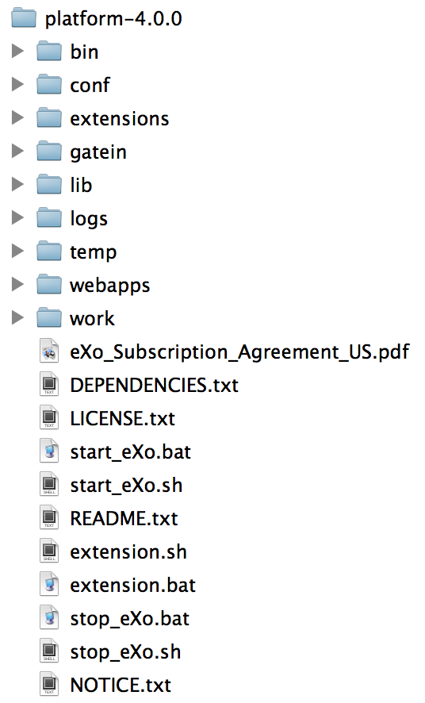
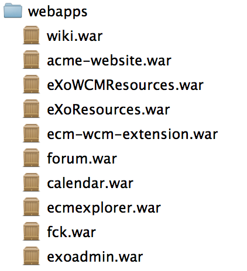
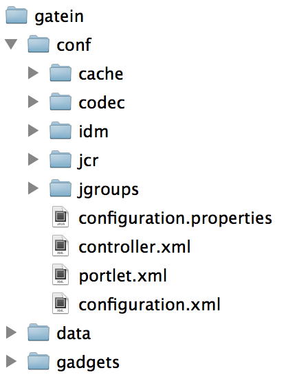
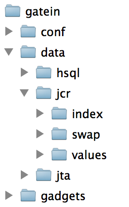
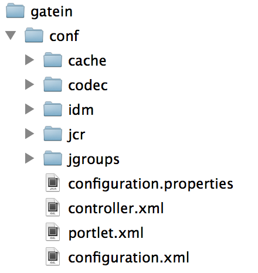
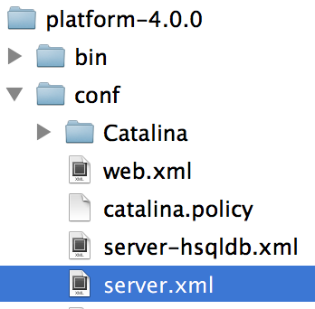
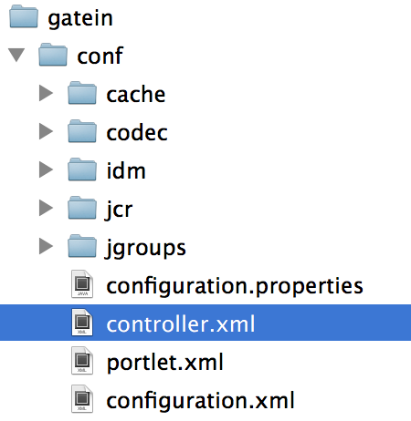
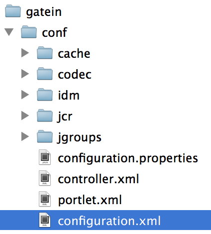
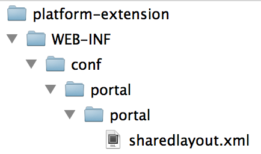
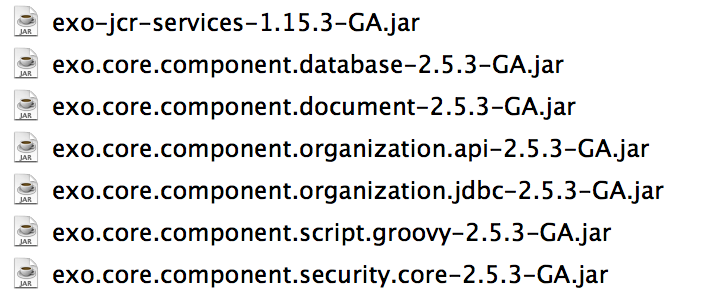

Configuration and Extensions
Basic Customization
eXo Platform Academy
May 2013
Agenda
- Folder Structure
- Configuration
- Extension Concept
- Service Configuration
Folder Structure
Folder Overview
- Standard tomcat, but enhanced
- jars in tomcat/lib
- wars in tomcat/webapps
- declarations in conf/Catalina/
- modified conf/server.xml
- modified conf/jaas.config
- start_eXo file
- extension launcher and folder
- bin/gatein file
- new gatein folder
WebApps

- About 60 webapps
- Several webapps per project
Gatein Folder
- Configuration
- Data
- Index
- Logs
Data Folder
- HSQL database
- Not for production
- Index
- Lucene index data
- Swap
- Temporary data
- Values
- Binary Data that is not stored in the database
- JTA
- Java Transaction API
Configuration
A short Introduction
External Configuration
- tomcat/gatein/conf/ and subfolders
- Highest Priority
- tomcat/gatein/conf/configuration.properties for SysAdmin properties

Configuration Properties
- tomcat/gatein/conf/configuration.properties
# Super User declaration
exo.super.user=root
# Security domain name: This variable controls the value of "portal.container.realm" too
# i.e: ${portal.container.realm}=${exo.security.domain}
# Take care to keep up-to-date java.security.auth.login.config ($CATALINA_BASE/conf/jaas.conf)
exo.security.domain=gatein-domain
# Create user dashboard while creating user identity
gatein.portal.idm.createuserportal=false
# Destroy user dashboard while deleting user identity
gatein.portal.idm.destroyuserportal=true
Configuration Properties
- Boost eXo and augment the cache liveTimes !
- liveTimes are seconds: 600s = 10min
###########################
#
# Caches
#
# == Gatein Caches Configuration == #
# Portal Cache Configuration - MOP session Manager
# - Standalone (live time in seconds)
gatein.cache.mop.maxsize=5000
gatein.cache.mop.livetime=600
# - Cluster (expiration in milliseconds)
gatein.cache.mop.maxnodes=5000
gatein.cache.mop.expiration=600000
# Portal Cache Configuration - Navigation Service
# - Standalone (live time in seconds)
gatein.cache.navigation.maxsize=5000
gatein.cache.navigation.livetime=600
# - Cluster (expiration in milliseconds)
gatein.cache.navigation.maxnodes=5000
gatein.cache.navigation.expiration=600000
# Portal Cache Configuration - Description Service
# - Standalone (live time in seconds)
gatein.cache.description.maxsize=5000
gatein.cache.description.livetime=600
# - Cluster (expiration in milliseconds)
gatein.cache.description.maxnodes=5000
gatein.cache.description.expiration=600000
# Portal Cache Configuration - Page Service
# - Standalone (live time in seconds)
gatein.cache.page.maxsize=5000
gatein.cache.page.livetime=600
# - Cluster (expiration in milliseconds)
gatein.cache.page.maxnodes=5000
gatein.cache.page.expiration=600000
# Portal Cache Configuration - Template Service
# - Standalone (live time in seconds)
cache.exo.portal.TemplateService.capacity=3000
cache.exo.portal.TemplateService.liveTime=3600
# Portal Cache Configuration - ResourceBundleData
# - Standalone (live time in seconds)
cache.exo.portal.ResourceBundleData.capacity=3000
cache.exo.portal.ResourceBundleData.liveTime=-1
# == COMMONS Caches Configuration == #
# Commons Cache Configuration - Settings Service
# - Standalone (live time in seconds)
cache.exo.commons.SettingService.Capacity=2000
cache.exo.commons.SettingService.TimeToLive=60000
# - Cluster (expiration in milliseconds)
cache.exo.commons.SettingService.MaxNodes=2000
cache.exo.commons.SettingService.ExpirationTimeout=6000000
# == WCM Caches Configuration == #
# WCM Cache Configuration - Query Service
# - Standalone (live time in seconds)
# - Cluster (expiration in milliseconds)
wcm.cache.queryservice.maxnodes=5000
wcm.cache.queryservice.expirationtimeout=600000
# WCM Cache Configuration - Query Service
# - Standalone (live time in seconds)
# - Cluster (expiration in milliseconds)
wcm.cache.managedrive.maxnodes=5000
wcm.cache.managedrive.expirationtimeout=600000
# WCM Cache Configuration - Script Service
# - Standalone (live time in seconds)
wcm.cache.scriptservice.capacity=300
wcm.cache.scriptservice.timetolive=86400
# WCM Cache Configuration - Templates Service
# - Standalone (time to live in seconds)
wcm.cache.templateservice.capacity=3000
wcm.cache.templateservice.timetolive=86400
# WCM Cache Configuration - Initial Webcontent
# - Standalone (time to live in seconds)
wcm.cache.webcontent.initialwebcontentplugin.capacity=300
wcm.cache.webcontent.initialwebcontentplugin.timetolive=86400
# WCM Cache Configuration - Fragment Cache Service (Markup Cache)
# - Standalone (time to live in seconds)
wcm.cache.fragmentcacheservice.capacity=10000
wcm.cache.fragmentcacheservice.timetolive=30
# WCM Cache Configuration - PDF Viewer Service
# - Standalone (time to live in seconds)
wcm.cache.pdfviewer.capacity=1000
wcm.cache.pdfviewer.timetolive=3600
# WCM Cache Configuration - SEO Cache
# - Standalone (time to live in seconds)
wcm.cache.seoservice.capacity=1000
wcm.cache.seoservice.timetolive=3600
# WCM Cache Configuration - Javascript Cache
# - Standalone (time to live in seconds)
cache.exo.ecms.javascript.maxSize=1000
cache.exo.ecms.javascript.liveTime=3600
# WCM Cache Configuration - Composer
# - Standalone (time to live in seconds)
wcm.cache.wcmcomposer.capacity=1000
wcm.cache.wcmcomposer.timetolive=3600
# == SOCIAL Caches Configuration == #
# Social Cache Configuration - Identity
# - Standalone (time to live in seconds)
cache.exo.social.IdentityCache.Capacity=500
cache.exo.social.IdentityCache.TimeToLive=-1
# Social Cache Configuration - Identity Index
# - Standalone (time to live in seconds)
cache.exo.social.IdentityIndexCache.Capacity=500
cache.exo.social.IdentityIndexCache.TimeToLive=-1
# Social Cache Configuration - Profile
# - Standalone (time to live in seconds)
cache.exo.social.ProfileCache.Capacity=500
cache.exo.social.ProfileCache.TimeToLive=-1
# Social Cache Configuration - Identities
# - Standalone (time to live in seconds)
cache.exo.social.IdentitiesCache.Capacity=2000
cache.exo.social.IdentitiesCache.TimeToLive=86400
# Social Cache Configuration - Identities Count
# - Standalone (time to live in seconds)
cache.exo.social.IdentitiesCountCache.Capacity=2000
cache.exo.social.IdentitiesCountCache.TimeToLive=86400
# Social Cache Configuration - Relationship
# - Standalone (time to live in seconds)
cache.exo.social.RelationshipCache.Capacity=20000
cache.exo.social.RelationshipCache.TimeToLive=-1
# Social Cache Configuration - Relationship From Identity
# - Standalone (time to live in seconds)
cache.exo.social.RelationshipFromIdentityCache.Capacity=20000
cache.exo.social.RelationshipFromIdentityCache.TimeToLive=-1
# Social Cache Configuration - Relationships Count
# - Standalone (time to live in seconds)
cache.exo.social.RelationshipsCountCache.Capacity=800
cache.exo.social.RelationshipsCountCache.TimeToLive=-1
# Social Cache Configuration - Relationships
# - Standalone (time to live in seconds)
cache.exo.social.RelationshipsCache.Capacity=800
cache.exo.social.RelationshipsCache.TimeToLive=-1
# Social Cache Configuration - Activity
# - Standalone (time to live in seconds)
cache.exo.social.ActivityCache.Capacity=10000
cache.exo.social.ActivityCache.TimeToLive=-1
# Social Cache Configuration - Activities Count
# - Standalone (time to live in seconds)
cache.exo.social.ActivitiesCountCache.Capacity=4000
cache.exo.social.ActivitiesCountCache.TimeToLive=-1
# Social Cache Configuration - Activities
# - Standalone (time to live in seconds)
cache.exo.social.ActivitiesCache.Capacity=4000
cache.exo.social.ActivitiesCache.TimeToLive=-1
# Social Cache Configuration - Space
# - Standalone (time to live in seconds)
cache.exo.social.SpaceCache.Capacity=1000
cache.exo.social.SpaceCache.TimeToLive=-1
# Social Cache Configuration - Space Ref
# - Standalone (time to live in seconds)
cache.exo.social.SpaceRefCache.Capacity=10000
cache.exo.social.SpaceRefCache.TimeToLive=-1
# Social Cache Configuration - Spaces Count
# - Standalone (time to live in seconds)
cache.exo.social.SpacesCountCache.Capacity=4000
cache.exo.social.SpacesCountCache.TimeToLive=86400
# Social Cache Configuration - Spaces
# - Standalone (time to live in seconds)
cache.exo.social.SpacesCache.Capacity=1000
cache.exo.social.SpacesCache.TimeToLive=86400
# == FORUM Caches Configuration == #
# Forum Cache Configuration - User Profiles
# - Standalone (time to live in seconds)
cache.exo.forum.UserProfiles.Capacity=500
cache.exo.forum.UserProfiles.TimeToLive=-1
# Forum Cache Configuration - Category List
# - Standalone (time to live in seconds)
cache.exo.forum.CategoryList.Capacity=50
cache.exo.forum.CategoryList.TimeToLive=-1
# Forum Cache Configuration - Category Data
# - Standalone (time to live in seconds)
cache.exo.forum.CategoryData.Capacity=150
cache.exo.forum.CategoryData.TimeToLive=-1
# Forum Cache Configuration - Forum List
# - Standalone (time to live in seconds)
cache.exo.forum.ForumList.Capacity=500
cache.exo.forum.ForumList.TimeToLive=-1
# Forum Cache Configuration - Forum Data
# - Standalone (time to live in seconds)
cache.exo.forum.ForumData.Capacity=2500
cache.exo.forum.ForumData.TimeToLive=-1
# Forum Cache Configuration - Topic Data
# - Standalone (time to live in seconds)
cache.exo.forum.TopicData.Capacity=500
cache.exo.forum.TopicData.TimeToLive=-1
# Forum Cache Configuration - Watch List Data
# - Standalone (time to live in seconds)
cache.exo.forum.WatchListData.Capacity=500
cache.exo.forum.WatchListData.TimeToLive=-1
# Forum Cache Configuration - Link List Data
# - Standalone (time to live in seconds)
cache.exo.forum.LinkListData.Capacity=250
cache.exo.forum.LinkListData.TimeToLive=-1
# Forum Cache Configuration - Object Name Data
# - Standalone (time to live in seconds)
cache.exo.forum.ObjectNameData.Capacity=500
cache.exo.forum.ObjectNameData.TimeToLive=-1
# Forum Cache Configuration - Misc Data
# - Standalone (time to live in seconds)
cache.exo.forum.MiscData.Capacity=600
cache.exo.forum.MiscData.TimeToLive=-1
# == WIKI Caches Configuration == #
# Wiki Cache Configuration - Spaces
# - Standalone (time to live in seconds)
cache.exo.wiki.PageRenderingCache.Capacity=1000
cache.exo.wiki.PageRenderingCache.TimeToLive=-1
# == CALENDAR Caches Configuration == #
# Calendar Cache Configuration - Group Calendar
# - Standalone (time to live in seconds)
cache.exo.calendar.GroupCalendarCache.Capacity=1000
cache.exo.calendar.GroupCalendarCache.TimeToLive=3600
Datasource
- The datasource is managed by the application server (tomcat)
- eXo accesses the datasources using JNDI lookup
- IDM : Identity Management (Organization: Users and Groups)
###########################
#
# Datasources
#
# JNDI Name of the IDM datasource
# portal name will be appended to this name before the JNDI lookup
# example : java:/comp/env/exo-idm in "portal" portal will result in a JNDI lookup on context : java:/comp/env/exo-idm_portal
gatein.idm.datasource.name=java:/comp/env/exo-idm
# Optional database schema for use with IDM tables (empty by default), uncomment this line to specify required schema name
#gatein.idm.datasource.schema=EXO1
# name of the datasource that will be used by eXo JCR
# portal name will be appended to this name before the JNDI lookup
# example : java:/comp/env/exo-jcr in "portal" portal will result in a JNDI lookup on context : java:/comp/env/exo-jcr_portal
gatein.jcr.datasource.name=java:/comp/env/exo-jcr
# indicates if the jcr datasource is using managed transactions.
# false by default.
#gatein.jcr.datasource.managed=true
# JCR dialect.
# auto : enabled auto detection
gatein.jcr.datasource.dialect=auto
Datasource
- In tomcat/conf/server.xml is the JNDI Resource configuration
<!-- eXo JCR Datasource for portal -->
<Resource name="exo-jcr_portal" auth="Container" type="javax.sql.DataSource"
initialSize="5" maxActive="20" minIdle="5" maxIdle="15" maxWait="10000"
validationQuery="SELECT 1 FROM INFORMATION_SCHEMA.SYSTEM_USERS" validationQueryTimeout="5"
testWhileIdle="true" testOnBorrow="true" testOnReturn="false"
timeBetweenEvictionRunsMillis="30000" minEvictableIdleTimeMillis="60000"
removeAbandoned="true" removeAbandonedTimeout="300" logAbandoned="false"
poolPreparedStatements="true"
username="sa" password="" driverClassName="org.hsqldb.jdbcDriver"
url="jdbc:hsqldb:file:${gatein.data.dir}/hsql/exo-plf;shutdown=true;hsqldb.write_delay=false;"/>
- Remarks
- At the first startup the tables are created
- The provided user has to have permissions for table creation
- After the first startup the permission can be removed
Controller
- New concept since eXo Platform 3.5
- URL composition
- "/portal/" cannot be altered or removed
- tomcat/gatein/conf/controller.xml

Controller
portal
([A-Za-z]{2}(-[A-Za-z]{2})?)?
group
.*
([A-Za-z]{2}(-[A-Za-z]{2})?)?
user
.*
portal
([A-Za-z]{2}(-[A-Za-z]{2})?)?
.*
Exercise: Configuration
- Controller
- Find where the language is defined in controller.xml
- Test out French: http://localhost:8080/portal/fr/acme/
- Test out group pages with a “lang” parameter
- Stop the server
- Boost eXo Cache
- Open tomcat/gatein/conf/configuration.properties
- Search for liveTime=600 and set them to 99000
- Start the server
- Extra: Modify user the page pattern in controller.xml
- Extra: If you have a database on hand create, modify tomcat/conf/server.xml in order to point to your database
Extension Concept
A War + Activation Jar
Reason
- Support
- Avoids modifying source code in eXo deliveries
- No support from eXo for modified code
- Advantages
- Easy migration to new version
- Easy application of patches from eXo support
- Clear limit between eXo’s code and customer’s code
- Like a PlugIn that you re-apply after each migration
Concept
- Allows to customize
- HTML, CSS, Javascript, JSP
- Groovy Templates
- Configuration
- Internationalization
- A war file
- Contains all customization files
- You can overwrite/replace files contained in other wars
- Use the exact same path and name
- An activation jar
- Declares your war as eXo extension
War Project
- Customizations
- Put all your customizations in a war file
- If you wish to override, use the exact same path and file name
- web.xml
- Define the name of your extension in the tag "display-name"
- The name of the war file does NOT matter
- Declare the listener PortalContainerConfigOwner
<display-name>bike-extension</display-name> <listener-class>
org.exoplatform.container.web.PortalContainerConfigOwner
</listener-class>Activation JAR
- configuration.xml
-

- The JAR contains exactly one file in the folder "/conf"
- Name: configuration.xml
- Activate the war
- Service: org.exoplatform.container.definition. PortalContainerConfig
- Point to the name of the extension, defined in the web.xml tag "display-name"
<object type="org.exoplatform.container.definition.PortalContainerDefinitionChange$AddDependencies">
<!-- The list of names of the dependencies to add -->
<field name="dependencies">
<collection type="java.util.ArrayList">
<value>
<string>bike-extension</string>
</value>
</collection>
</field>
</object>Deployment
- Tomcat
- Stop tomcat
- Copy the jar to tomcat/lib
- Copy the war to tomcat/webapps
- JBoss
- In JBoss, create a ear containing the war and jar and deploy it
Test
- Testing
- After copying the war and jar you can test the extension
- Restart tomcat
- When re-deploying a modified war, stop tomcat and restart
- By default, war file are not unpacked in the webapps folder
Extension Exercise
A War + Activation Jar
Extension Exercise Overview
- In this exercise you will
- Modify the Admin Tool Bar
- Alter the login interface
- Add a language
- Maven
- Go to the folder with pom.xml and execute "mvn clean install"
- If you are online maven will download a lot of files
- Alternatively you can use the provided repository
Admin Tool Bar Configuration
- Current Admin Tool Bar configuration:
- webapps\platform-extension\WEB-INF\conf\portal\portal\sharedlayout.xml
- Overriden in your extension:
- bike-extension\WEB-INF\conf\portal\portal\sharedlayout.xml
- In “sharedlayout.xml“:
- definition of several portlets
- each entry in the Admin Tool Bar is a small portlet
- The file configures the order of these entries in the tool bar

Admin Tool Bar Configuration
*:/platform/users
platformNavigation
UICreatePlatformToolBarPortlet
*:/platform/users
false
Admin Tool Bar Configuration
*:/platform/web-contributors
platformNavigation
UICreatePlatformToolBarPortlet
*:/platform/users
false
Maven Offline Repository
- Install Maven
- Open the project file "…/exercises/custom-extension/1-project"
- Execute "mvn clean" in the shell
- There will be errors (if you are offline),
- If you are online, there will be downloads,
- If you wish to work without downloads, you should stop the execution.
- Use the prepared Maven repository
- Copy maven-repository.zip to §HOME/$username/.m2/
- Rename (or delete) the existing folder named "repository"
- Unzip maven-repository.zip
- Execute "mvn clean" in the shell
- No more errors or downloads, because the delivered repository is used
Exercise: Custom Extension 1/3
- Open exercise …/custom-extension/
- Copy the sharedlayout from the webapps/platform-extension
- exercises/custom-extension/1-project/war/src/main/webapp/WEB-INF/conf/portal/portalWEB-INF/conf/portal/portal/sharedlayout.xml
- Change the order of the portlets in the Admin Tool Bar
- Move the container around the Unified Search portlet after the container of the Quick Edit portlet
- .../exercises/custom-extension/1-project/war/src/main/webapp/WEB-INF/conf/portal/portal/sharedlayout.xml
- In order to be faster, integrate the next two customizations before compiling and starting eXo
Exercise: Custom Extension 2/3
- Use the same project folder:
- .../custom-extension/1-project/war/src/main/webapp
- Create your own version of the jsp file
- Copy tomcat/webapps/platform-extension\login\jsp\login.jsp to your project (path: exercises/custom-extension/1-project/war/src/main/webapp/login/jsp)
- Add “Welcome to the Bike Shop” to the jsp
- Remember: You have to copy login.jsp to the exact same path in your bike-extension
Exercise: Custom Extension 3/3
- Copy
- .../tomcat/webapps/portal/WEB-INF/conf/common/locales-config.xml to exact .../exercises/custom-extension/1-project/war/src/main/webapp/WEB-INF/conf/common/locales-config.xml
- Add Afrikaans language (“af“) to locales-config.xml
Exercise: Deploy and Test!
- Open .../exercises/custom-extension/1-project and execute "mvn clean install"
- Copy
- Copy the compiled war (.../1-project/war/target/bike-extension.war) to the tomcat/webapps folder
- Copy the compiled jar (.../1-project/config/target) file to the tomcat/lib folder
- Start eXo
- Use "start_eXo.sh --dev" if you want to unpack the wars
- Test !
- At login you should see the modified login.jsp (http://localhost:8080/portal/intranet)
- After login you should see modified Admin Tool Bar
- Click on change language and you should see Afrikaans in the list
Services
Introduction
- Services are java classes with a defined API
- Services are deployed to the tomcat/lib folder
- A service can have a default configuration
- In the jar: /conf/configuration.xml

Service Keywords
- Inversion of Control
- eXo uses the PicoContainer framework
- In PicoContainer services are referenced as "Components"
- eXo Container (based on a PicoContainer)
- Reads the configuration files and creates exactly one instance of each service (singleton pattern)
- The consumer of a service
- Does not create an instance (... new myService())
- Calls the exoContainer to provide a reference to the requested service
Service Keywords
- Interface – Implementation
- A service is defined by the java interface
- A service can have different implementations
- Only one implementation can be used during runtime
- The configuration files define which implementation is used
- Singleton
- Each service is created only once (new myService())
- The exoContainer holds the reference to this instance
- When requested, the consumer receives the reference
Service Configuration
- To declare a service to the eXo Container
- you must add an xml configuration to a specific place
- jar, webapp or external configuration
- eXoContainer reads the files named "configuration.xml"
- These files contain very often imports of other configuration files
war:/conf/platform/jcr-configuration.xml
war:/conf/platform/dms/dms-configuration.xml
war:/conf/platform/dms/dms-ext-configuration.xml
war:/conf/dms-extension/dms/dms-drives-configuration.xml
war:/conf/dms-extension/dms/dms-views-configuration.xml
war:/conf/platform/portal/portal-configuration.xml
war:/conf/platform/portal/web-filter-configuration.xml
war:/conf/platform/portal/resource-bundle-configuration.xml
war:/conf/platform/wcm/deployment/template-empty-deployment-configuration.xml
war:/conf/platform/common/common-configuration.xml
war:/conf/platform/upgrade/upgrade-configuration.xml
war:/conf/platform/cache-configuration.xml
war:/conf/platform/application-registry-configuration.xml
war:/conf/authoring/authoring-configuration.xml
war:/conf/welcome-screens/account-setup/account-setup-configuration.xml
Configuration Priority
- Default configuration inside of jar files
- /conf/portal/configuration.xml
- Webapp configuration inside of war files
- /WEB-INF/conf/configuration.xml
- External configuration
- /tomcat/gatein/conf/portal/portal/configuration.xml
- The external configuration overwrites everything
- The configuration.xml files are read automatically
- A configuration.xml can import other configuration files
Service Configuration
- The registration of a service
- done with the <component> elements
- You have to define a service, otherwise the service is not known by the eXoContainer
- Interface: defined by <key>
- Implementation: defined by <type>
- Example
- tomcat/webapps/portal/web-inf/conf/mail/portal-mail-configuration.xml
org.exoplatform.services.mail.MailService
org.exoplatform.services.mail.impl.MailServiceImpl
config
Service Reference
- A service is always referenced by its interface (<key>), not by the implementation (<type>)
- Example
- tomcat/webapps/portal/web-inf/conf/mail/portal-mail-configuration.xml
org.exoplatform.services.mail.MailService
org.exoplatform.services.mail.impl.MailServiceImpl
config
Configuration Parameters
- A service can be configured using parameters
- Each services defines the parameters it interpretes
org.exoplatform.services.resources.LocaleConfigService
org.exoplatform.services.resources.impl.LocaleConfigServiceImpl
locale.config.file
war:/conf/common/locales-config.xml
Complex Parameters
org.exoplatform.services.cache.CacheService
cache:type=CacheService
org.exoplatform.services.cache.impl.CacheServiceImpl
cache.config.default
The default cache configuration
Configuration Plugin
- Services can provide plugins
- Methods of the service
- Allows to add configuration without repeating the other configuration
org.exoplatform.services.organization.OrganizationService
user.portal.config.listener
addListenerPlugin
org.exoplatform.portal.config.UserPortalConfigListener
group.portal.config.listener
addListenerPlugin
org.exoplatform.portal.config.GroupPortalConfigListener
Configuration Profiles
Configuration Profiles
- Each profile activates certain configurations
- Java System Variable exo.profiles
- Example in tomcat/bin/setenv-customize.sample.sh :
# -----------------------------------------------------------------------------
#
# Settings customisation
#
# Refer to eXo Platform Administrators Guide for more details.
# http://docs.exoplatform.com
#
# -----------------------------------------------------------------------------
# You have 2 ways to customize your installation settings :
# 1- Rename the file setenv-customize.sample.sh to setenv-customize.sh and uncomment/change values below
# 2- Use system environment variables of your system or local shell
# -----------------------------------------------------------------------------
# -----------------------------------------------------------------------------
# JVM configuration
# -----------------------------------------------------------------------------
# Home directory of the JVM to use (Default : try to auto-compute it from existing java executable in path by default)
#JAVA_HOME=/opt/java/jdk6
# Use EXO_JVM_VENDOR="IBM" with J9 JVMs (Default : "ORACLE")
#EXO_JVM_VENDOR="IBM"
# Maximum Heap Size to use (Default : 2g)
#EXO_JVM_SIZE_MAX=1g
# Minimum Heap Size to use (Default : 512m)
#EXO_JVM_SIZE_MIN=1g
# Size of the Permanent Generation. (Default : 256m)
#EXO_JVM_PERMSIZE_MAX=128m
# Default locale language
#EXO_JVM_USER_LANGUAGE="fr"
# Default locale region
#EXO_JVM_USER_REGION="FR"
# Loads in-process debugging libraries to attach a debugger (true with --debug option on start_eXo.sh script)
#EXO_DEBUG=true
# Listening port for the debugger
#EXO_DEBUG_PORT=8000
# -----------------------------------------------------------------------------
# PLATFORM configuration
# -----------------------------------------------------------------------------
# eXo Platform comes with different runtime profiles, enabling you to customize which modules you want to enable/disable
#EXO_PROFILES="default,cluster,cluster-index-local"
# Assets versions used in static resources URLs. Useful to manage caches. (Default: The product version)
#EXO_ASSETS_VERSION=42
# Main directory where are stored all data (Default: ${CATALINA_BASE}/gatein/data) (also available with --data option on start_eXo.sh script)
#EXO_DATA_DIR=${HOME}/.eXo-platform/data
# Activates the development mode of eXo platform (true with --dev option on start_eXo.sh script)
#EXO_DEV=true
# Activates the JCR sessions leaks detector (Default: $EXO_DEV. true with --dev option on start_eXo.sh script)
#EXO_JCR_SESSION_TRACKING=true
# -----------------------------------------------------------------------------
# SMTP/Emails configuration
# -----------------------------------------------------------------------------
# Domain name used to produce absolute URLs in email notifications. (Default: http://localhost:8080)
#EXO_DEPLOYMENT_URL=https://intranet.mycompany.com
# Email display in "from" field of email notification. (Default: noreply@exoplatform.com)
#EXO_EMAIL_FROM=intranet@mycompany.com
# SMTP Server hostname. (Default: localhost)
#EXO_EMAIL_SMTP_HOST=smtp.gmail.com
# SMTP Server port. (Default: 25)
#EXO_EMAIL_SMTP_PORT=465
# True to enable the secure (TLS) SMTP. See RFC 3207. (Default: false)
#EXO_EMAIL_SMTP_STARTTLS_ENABLE=true
# True to enable the SMTP authentication. (Default: false)
#EXO_EMAIL_SMTP_AUTH=true
# Username to send for authentication. (Default: )
#EXO_EMAIL_SMTP_USERNAME=account@gmail.com
# Password to send for authentication. (Default: )
#EXO_EMAIL_SMTP_PASSWORD=password
# Specify the port to connect to when using the specified socket factory. (Default: )
#EXO_EMAIL_SMTP_SOCKET_FACTORY_PORT=465
# This class will be used to create SMTP sockets. (Default: )
#EXO_EMAIL_SMTP_SOCKET_FACTORY_CLASS=javax.net.ssl.SSLSocketFactory
# -----------------------------------------------------------------------------
# JOD Converter configuration
# -----------------------------------------------------------------------------
# Used to preview documents
#
# Requires to have openoffice/libreoffice server installed
# Jod Converter activation (Default : true)
#EXO_JODCONVERTER_ENABLE=false
# Comma separated list of ports numbers to use for open office servers used to convert documents.
# One office server instance will be created for each port. (Default : 2002)
#EXO_JODCONVERTER_PORTS=2002,2003,2004,2005
# The absolute path to the office home on the server. (Default : Path automatically discovered based on the OS default locations)
#EXO_JODCONVERTER_OFFICEHOME=/usr/lib/libreoffice
# -----------------------------------------------------------------------------
# Logs configuration
# -----------------------------------------------------------------------------
# Logback configuration file (http://logback.qos.ch/manual/configuration.html ) - For an advanced customization of logs
#EXO_LOGS_LOGBACK_CONFIG_FILE=$CATALINA_BASE/conf/logback.xml
# Enforce to display logs in the console (Default: true if started with start_eXo.sh without --background option, false otherwise)
#EXO_LOGS_DISPLAY_CONSOLE=true
# Enforce to display colorized logs in the console (Default: false for windows, true otherwise) (You can use --color and --nocolor options on start_eXo.sh to enforce the configuration)
#EXO_LOGS_COLORIZED_CONSOLE=true
# -----------------------------------------------------------------------------
# Tomcat configuration
# -----------------------------------------------------------------------------
# File used to store the PID of the process. (Default: ${CATALINA_BASE}/temp/catalina.pid if start_eXO.sh is launched with --background option. Empty otherwise)
#CATALINA_PID=$CATALINA_BASE/temp/catalina.pid
# Explodes all wars in the webapps directory (Default: $EXO_DEV. true with --dev option on start_eXo.sh script)
#EXO_TOMCAT_UNPACK_WARS=true
Configuration Profiles
- Any part of the configuration can be added to a profile
- Profile-dependent configuration is only taken into account if the profile is used
- A profile can depend on a list of profiles. In this case, the use of any profile activates the configuration
<value-param profiles="cluster">
<name>cache.config.template</name>
<value>classpath:/conf/jbosscache/cluster/config.xml</value>
</value-param>Configuration and Extensions
Basic Customization
Copyright 2013 eXo Platform